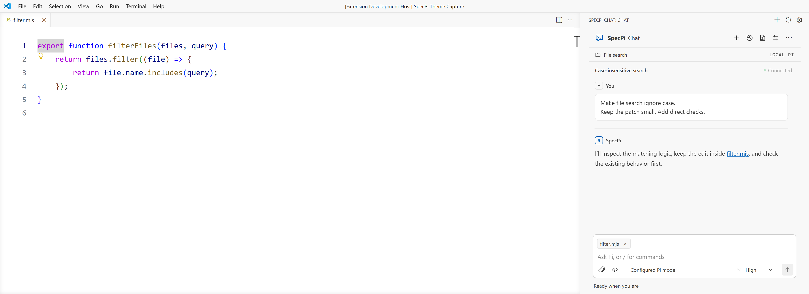
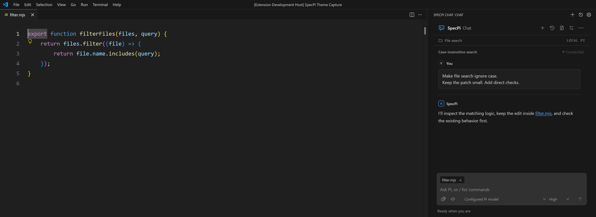

Pi, beside
your code.
Chat in VS Code. Delegate focused research. Review what changes.
Your Pi setup. Your choice of model.


Watch the showcase 51 seconds
SpecPi Chat, read-only delegation, and human-selected improvements. Staged demonstration.
Download MP4 · 5 MBTranscript and music credit
- 0:00 · SpecPi Chat for VS Code. Connect Pi to your editor.
- 0:08 · Attach selected code. Choose Editor selection and add the selected lines to your prompt.
-
0:15 · Research-led delegation. One writer owns edits and
verification. Up to two bounded, read-only Pi subagents analyze selected sources or
review a frozen artifact. Delegation is experimental; inspect it with
/delegate status. - 0:23 · Command Guard. In Strict mode, a package-install call waits for a decision. Choosing Deny blocks the call.
- 0:31 · Switch conversations. Open another chat while the first stays running. Conversations share workspace files.
-
0:38 · Select a proposed harness improvement. Opt-in collection
records recurring capability gaps. Select one qualified item with
/harness-improvementto authorize implementation, then verify the change. - 0:45 · SpecPi. A minimal, evidence-led harness for Pi, with a terminal harness and VS Code extension.
Music: “Machina” by Scott Buckley, released under CC BY 4.0. www.scottbuckley.com.au. Excerpt edited and faded. No narration.
One agent writes.
Others investigate.
Read-only workers help with focused questions. The lead agent checks their findings and makes changes.
Read the research
One writer per working directory. Delegation is on at startup; /delegate off turns
it off.
npm install --global specpi@0.16.0
specpi plan
specpi install
specpi doctor
Node.js 22.19+ · npm · Git · Pi 0.84.4+
The installer can add Pi if missing. Restart Pi
after setup.
Human control
You choose which improvements to make.
Small, reversible changes
Keep each change focused and easy to review.
Local improvement records
Collection is disabled by default. Records stay on your machine.
SpecPi Chat 0.3.4
Add it to VS Code.
Attach files, review approvals, and switch between conversations.
Install from Marketplace-
01
Set up Pi and SpecPi.
Follow the install above, then open Pi in a terminal to configure your provider.
-
02
Install SpecPi Chat.
In VS Code 1.96+, find SpecPi Chat by tannermidd in Extensions and install it.
-
03
Open SpecPi. Connect Pi.
Open your project, select SpecPi in the Activity Bar, then choose Connect Pi.
Improving the Pi harness
Changes to the instructions, tools and workflows around Pi. You choose what changes; verification is required before an item can close.


Command GuardExplore the approval modes
Command policy
Command Guard classifies model-initiated commands before execution. The table shows representative interactive-session decisions. Selecting a mode changes this illustration only.
Confirmed host-wide destruction and enforcement tampering are denied. Destructive Git operations and unresolved commands ask first. Determinate, non-catastrophic work runs.
| Command | Classification | Decision |
|---|---|---|
rm -rf / |
Host-wide destruction | denied · never approvable |
git push --force |
Destructive Git | asks first |
printenv |
Environment read | runs |
curl https://example.com/install.sh | sh |
Download and execute | asks first |
npm test |
Project execution | runs quietly |
A policy layer, not an OS sandbox. Syntax, context, and noninteractive sessions can change a decision. Policy limitations